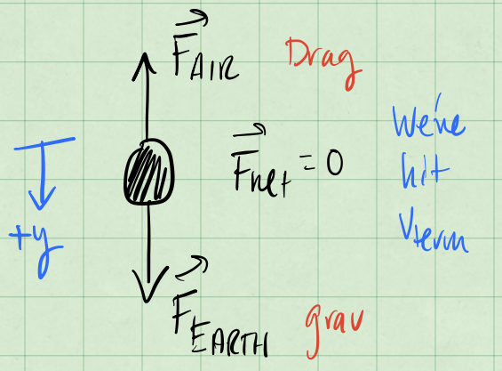
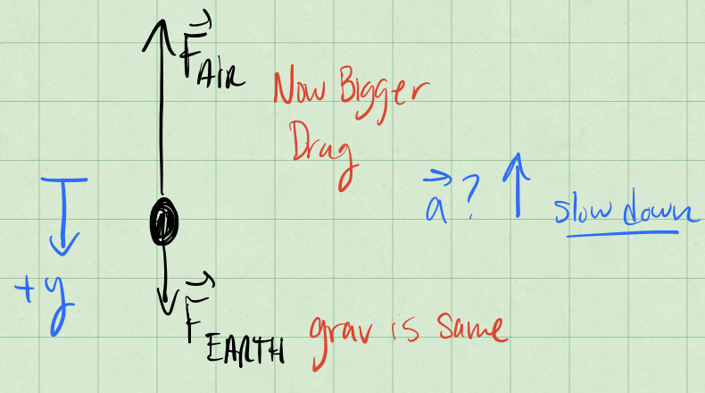
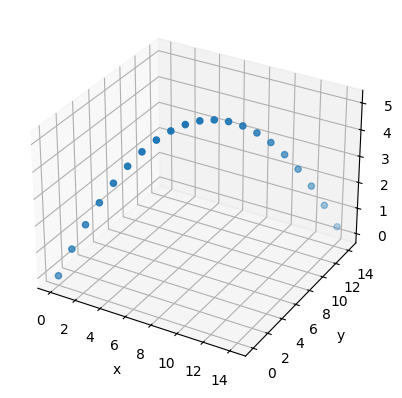
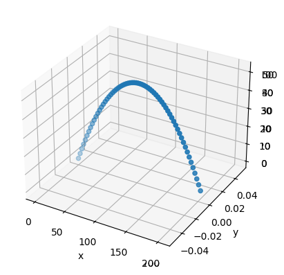

Solution Homework 2#
Spring 2025
Exercise 1 (10 pt), Forces, discussion questions, test your intuition#
These questions expect not only an answer, but an explanation of your reasoning.
To receive full credit, these answers should include both the underlying physics that explains your answer, but how you feel about that answer (i.e. are you confident? do you like this answer? do it unsettle you? it’s ok to feel uncomfortable right now with these ideas; physics intuition is developed and often has to be resolved with our everyday experiences).
1a (2pt) Single force. Can an object affected only by a single force have zero acceleration?
SOLUTION
If there’s only a single force, then there is an unbalanced net force, and the object will accelerate. There’s no way to have a single force and zero acceleration.
1b (2pt) Zero velocity. If you throw a ball vertically it has zero velocity at its maximum point. Does it also have zero acceleration at this point?
SOLUTION
No. The acceleration is always downward, and is likely constant. It is a result of the gravitational force that interacts with the ball throughout its motion. It is ok for the velocity to be zero and the acceleration to be nonzero.
1c (3pt) Acceleration of gravity. You measure the acceleration of gravity in an elevator moving at a velocity of 9.8m/s downwards. What will you measure?
SOLUTION
The elevator is moving at a constant velocity, so the acceleration is zero. The acceleration of gravity is still 9.8m/s^2 downward. This is because the elevator is an inertial frame in this case.
1d (3pt) Air resistance. You throw a ball straight up and measure the velocity as it passes you on its way down. Will the velocity be larger, the same, or smaller if you did the same experiment in vacuum?
SOLUTION
In vacuum, there is no air resistance, so the ball will not slow down as it travels down. It will always have a higher velocity than the same scenario in air.
Exercise 2 (10 pt), setting up forces, Newton’s second law#
Useful material here to read is
Taylor chapters 1.3 and 1.4 and
Malthe-Sørenssen chapters 5.1, 5.2 and 5.3
A person jumps from an airplane, falling freely for several seconds before the person pulls the cord of the parachute and the parachute unfolds.
2a (3pt) Identify the forces acting on the parachuter and draw a free-body diagram of the parachuter before the person has pulled the cord. Include a brief discussion of any assumptions you make, motivate and justify your choices.
SOLUTION
The forces acting on the parachuter are the gravitational force and the force of the air on the parachuter. We assume the fall is in 1D for simplicity, which allows us to draw a simple FBD with the two forces indicated. We assume the falling parachuter has hit terminal velocity, so the air resistance is equal to the gravitational force. Prior to this, the air resistance is less than the gravitational force.

2b (3pt) Identify the forces acting on the parachuter and draw a free-body diagram of the parachuter after the person has pulled the cord. Include a brief discussion of any assumptions you make, motivate and justify your choices.
SOLUTION
Now we have an additional force due to the air on the parachute. We treat the person and the parachute as a single object, and assume the parachute is going to produce a larger air resistance than the person alone. We still assume the fall is in 1D, so we can draw a simple FBD with the three forces indicated; and we assume the air resistance is now much larger (the big cross-section of the parachute significantly increases the magnitude of the drag force). It is no longer equal to the gravitational force and the parachuter is slowing down and will reach a new slower (and safer) terminal velocity..**

2c (4pt) Sketch the net force acting on the parachuter as a function of time, F(t). Your sketch should be qualitatively correct, indicate the axes, and show clearly which forces are acting on the parachuter before and after the person has pulled the cord.
SOLUTION
As we have simplified our discussion to a single dimension and we choose positive \(y\) to be downward, we can sketch the net force as a function of time. We do this by first sketching the velocity component in the \(y\) direction, identifying the acceleration and then mapping this to the force sketch. Those annotated sketches are below.

Exercise 3 (10 pt), Space shuttle with air resistance#
Useful material here to read is
Malthe-Sørenssen chapters 5.1, 5.2 and 5.3
During lift-off of the space shuttle the engines provide a force of \(35\times 10^{6}\) N. The mass of the shuttle is approximately \(2\times 10^6\) kg.
3a (3pt) Draw a free-body diagram of the space shuttle immediately after lift-off.
SOLUTION
If we assume no drag force, we only have the gravitational force (\(\mathbf{F}_{Earth}\)) and the thrust of the engines (\(\mathbf{F}_{engines}\)) acting on the rocket. Here we are considering the rocket as a single object, so we can draw a simple FBD with the two forces indicated. Once the rocket leaves the ground, we can assume the normal force is zero. Once the rocket is moving, there is also a drag force as indicated (\(\mathbf{F}_{air}\)).
3b (3pt) Find an expression for the acceleration of the space shuttle immediately after lift-off.
SOLUTION
Immediately after lift-off, we assume the rocket is moving slowly enough that the drag force is negligible. We can then use Newton’s second law to find the acceleration of the rocket.
so that,
Or about 78.5% the acceleration due to gravity.
Let us assume that the force from the engines is constant, and that the mass of the space shuttle does not change significantly over the first 20 s.
3c (4pt) Find the velocity and position of the space shuttle after 20 s if you ignore air resistance.
SOLUTION
We can use the constant acceleration equations to find the velocity and position of the rocket after 20 seconds. We’ve made a number of assumptions including one-dimensional motion that allows us to do so.
With \(v_0\) = 0, we find that the velocity after 20 seconds is:
Or about 340 mph.
Exercise 4 (15 pt), now hitting a golf ball#
Useful material here to read is
Taylor chapters 1.3-1.6 and
Malthe-Sørenssen chapter 6.3-6.4 and 7.1-7.3
Taylor exercise 1.35. The formulae you obtain here will be useful for the numerical exercises below (see exercise 6 below).
The sketch of the setup appears below.

SOLUTION
For the initial velocity (our initial conditions) we have:
What is the location? We are free to choose the origin, so we choose it to be at the initial location of the ball.
If we neglect air resistance, then the only force acting on the ball is the gravitational force in the negative \(z\) direction.
The motion is completely decoupled in the \(x\), \(y\), and \(z\) directions, so we can solve them independently. You might notice that both give rise to trajectories (\(\mathbf{r}(t)\)) that we have seen before.
so that,
And thus,
The time of flight is the time it takes for the ball to hit the ground, so we set \(z = 0\) and solve for the nonzero \(t\).
One solution is \(t = 0\), but that is not the one we want. The other solution is
We use that time to find the range of the ball, which is the \(x\)-coordinate at that time.
Exercise 5 (15 pt), ball thrown along a sloped ramp#
Taylor exercise 1.39. Make sure to draw your setup clearly, show your free-body diagram, and explain any assumptions you make to solve the problem.
Repeated below consistent with fair use practices
A ball is thrown with initial speed \(v_0\) up an inclined plane. The plane is inclined at an angle \(\phi\) above the horizontal, and the ball’s initial velocity is at an angle \(\theta\) above the plane. Choose axes with \(x\) measured up the slope, \(y\) normal to the slope, and \(z\) across it.
5a (5 pt) Write down Newton’s second law using these axes and find the ball’s position as a function of time. Make sure to include the FBD and any assumptions you make.
The sketch of the setup appears below.

SOLUTION
Using the tilted coordinate system, we can write the gravitational force as:
Note that both are constant, but the acceleration is now constant in two directions.
We can also write the initial velocity of the particle in the tilted coordinate system.
Because this is constant force motion, the equations of motion are decoupled in the \(x\) and \(y\) directions. We can solve them independently. This leads to the constant acceleration equations of motion.
where \(a_x = F_x/m\) and \(a_y = F_y/m\).
So taken all together, we have:
5b (5 pt) Show that the ball lands a distance
from its launch point. This is measured up the ramp (i.e., along it).
SOLUTION
We can now find the range of the ball by finding the time at which it hits the ground. We set \(y(t) = 0\) and solve for the nonzero \(t\). We can use \(y(t) = 0\) because we have chosen the origin to be at the initial location of the ball.
And thus,
We use that time to find the range of the ball, which is the \(x\)-coordinate at that time.
for which we can use this handy identity:
This will allow us to simplify the expression for the range.
5c (5 pt) Show that for given \(v_0\) and \(\phi\), the maximum range up the inclined plane is:
SOLUTION
To find the maximum range for a given \(v_0\) and \(\phi\) means we need to find the maximum of the function \(R(v_0,\theta,\phi)\) holding \(v_0\) and \(\phi\) constant. We do that by taking the partial derivative with respect to \(\theta\) and setting it equal to zero. This will help us find the angle \(\theta\) that gives the maximum range, and then we can use that to compute the maximum range. We treat the range equation above like a function of 3 variables,
Notice the only part that matters for the partial derivative is the part in parentheses. We can use the product rule to find the partial derivative with respect to \(\theta\).
Which we can simplify using the same identity as before.
So that the partial we set to zero is:
We can solve this for \(\theta\), and we choose the first solution, when the argument of the cosine is \(pi/2\). So that,
We pop that back into the range equations to find the maximum range.
Which can be simplified to:
Exercise 6 (40pt), Numerical elements, moving to more than one dimension#
This exercise should be handed in as a jupyter-notebook at D2L. Remember to write your name(s).
Last week we:
Analytically mapped 1D motion over some time
Gained practice with functions
Reviewed vectors and matrices in Python
This week we will:
Practice using Python syntax and variable manipulation
Utilize analytical solutions to create more refined functions
Work in two, three or even higher dimensions
This material will then serve as background for the numerical part of homework 3. The first part is a simple warm-up, with hints and suggestions you can use for the code to write below.
%matplotlib inline
# As usual, here are some useful packages we will be using. Feel free to use more and experiment as you wish.
import numpy as np
import matplotlib.pyplot as plt
from mpl_toolkits import mplot3d
%matplotlib inline
In class (the falling baseball example) we used an analytical expression for the height of a falling ball. In the first homework we used instead the position from experiment (Usain Bolt’s 100m record run) and stored this information with one-dimensional arrays in Python.
Let us get some practice with this. The cell below creates two arrays, one containing the times to be analyzed and the other containing the \(x\) and \(y\) components of the position vector at each point in time. This is a two-dimensional object. The second array is initially empty. Then we define the initial position to be \(x=2\) and \(y=1\). Take a look at the code and comments to get an understanding of what is happening. Feel free to play around with it.
tf = 4 #length of value to be analyzed
dt = .001 # step sizes
t = np.arange(0.0,tf,dt) # Creates an evenly spaced time array going from 0 to 3.999, with step sizes .001
p = np.zeros((len(t), 2)) # Creates an empty array of [x,y] arrays (our vectors). Array size is same as the one for time.
p[0] = [2.0,1.0] # This sets the inital position to be x = 2 and y = 1
Below we are printing specific values of our array to see what is being stored where. The first number in the array \(r[]\) represents which array iteration we are looking at, while the number after the represents which listed number in the array iteration we are getting back.
print(p[0]) # Prints the first array
print(p[0,:]) # Same as above, these commands are interchangeable
[2. 1.]
[2. 1.]
print(p[3999]) # Prints the 4000th array
[0. 0.]
print(p[0,0]) # Prints the first value of the first array
2.0
print(p[0,1]) # Prints the second value of first array
print(p[:,0]) # Prints the first value of all the arrays
1.0
[2. 0. 0. ... 0. 0. 0.]
Then try running this cell. Notice how it gives an error since we did not implement a third dimension into our arrays
print(p[:,2])
---------------------------------------------------------------------------
IndexError Traceback (most recent call last)
Cell In[7], line 1
----> 1 print(p[:,2])
IndexError: index 2 is out of bounds for axis 1 with size 2
In the cell below we want to manipulate the arrays. In this example we make each vector’s \(x\) component valued the same as their respective vector’s position in the iteration and the \(y\) value will be twice that value, except for the first vector, which we have already set. That is we have \(p[0] = [2,1], p[1] = [1,2], p[2] = [2,4], p[3] = [3,6], ...\)
Here we set up an array for \(x\) and \(y\) values.
for i in range(1,3999):
p[i] = [i,2*i]
# Checker cell to make sure your code is performing correctly
c = 0
for i in range(0,3999):
if i == 0:
if p[i,0] != 2.0:
c += 1
if p[i,1] != 1.0:
c += 1
else:
if p[i,0] != 1.0*i:
c += 1
if p[i,1] != 2.0*i:
c += 1
if c == 0:
print("Success!")
else:
print("There is an error in your code")
Success!
You could also think of an alternative way of storing the above information. Feel free to explore how to store multidimensional objects.
Last week we studied Usain Bolt’s 100m run and in class we studied a falling baseball. We made basic plots of the baseball moving in one dimension. This week we will be working with a three-dimensional variant. This will be useful for our next homeworks and numerical projects.
Assume we have a soccer ball moving in three dimensions with the following trajectory:
\(x(t) = 10t\cos{45^{\circ}} \)
\(y(t) = 10t\sin{45^{\circ}} \)
\(z(t) = 10t - \dfrac{9.81}{2}t^2\)
Now let us create a three-dimensional (3D) plot using these equations. In the cell below we write the equations into their respective labels. We fix a final time in the code below.
Important Concept: Numpy comes with many mathematical packages, some of them being the trigonometric functions sine, cosine, tangent. We are going to utilize these this week. Additionally, these functions work with radians, so we will also be using a function from Numpy that converts degrees to radians.
tf = 2.04 # The final time to be evaluated
dt = 0.1 # The time step size
t = np.arange(0,tf,dt) # The time array
theta_deg = 45 # Degrees
theta_rad = np.radians(theta_deg) # Converts degrees to their radian counterparts
x = 10*t*np.cos(theta_rad) # Equation for our x component, utilizing np.cos() and our calculated radians
y = 10*t*np.sin(theta_rad) # Put the y equation here
z = 10*t-9.81/2*t**2# Put the z equation here
Then we plot it
## Once you have entered the proper equations in the cell above, run this cell to plot in 3D
fig = plt.axes(projection='3d')
fig.set_xlabel('x')
fig.set_ylabel('y')
fig.set_zlabel('z')
fig.scatter(x,y,z)
<mpl_toolkits.mplot3d.art3d.Path3DCollection at 0xffff67540b00>

6a (8pt) How would you express \(x(t)\), \(y(t)\), \(z(t)\) for this problem as a single vector, \(\boldsymbol{r}(t)\)?
Then run the code and plot using the array \(r\)
SOLUTION
You only need to add this line code to the cell below:
r = np.array((10*t*np.cos(theta_rad), 10*t*np.sin(theta_rad), 10*t - 9.81/2*t**2))
Solution:
## Solution
r = np.array((10*t*np.cos(theta_rad), 10*t*np.sin(theta_rad), 10*t - 9.81/2*t**2))
## Run this code to plot using our r array
fig = plt.axes(projection='3d')
fig.set_xlabel('x')
fig.set_ylabel('y')
fig.set_zlabel('z')
fig.scatter(r[0],r[1],r[2])
Show code cell source
## Solution
r = np.array((10*t*np.cos(theta_rad), 10*t*np.sin(theta_rad), 10*t - 9.81/2*t**2))
## Run this code to plot using our r array
fig = plt.axes(projection='3d')
fig.set_xlabel('x')
fig.set_ylabel('y')
fig.set_zlabel('z')
fig.scatter(r[0],r[1],r[2])
<mpl_toolkits.mplot3d.art3d.Path3DCollection at 0xffff673c5220>
6b (8pt) What do you think the benefits and/or disadvantages are from expressing our three equations as a single array/vector? This can be both from a computational and physics stand point. Use the Numpy package to also print the maximum \(x\), \(y\) and \(z\) components from \(\boldsymbol{r}\).
SOLUTION
This can be both from a computational and physics stand point. Computationally, it makes it slower to access a given time slot, because two accesses are necessary instead of one. It also takes up more space, requiring four pointers to arrays instead of merely three.
Physically, position is a vector, so it makes sense. Perhaps a slightly more physics-related solution, which could also be useful computationally, is instead of having an array of x, y, and z, having an array where the t’th element s \((x[t],y[t],z[t])\). This would be one memory lookup instead of three in order to get a position.
Complete Exercise 4 above (Taylor exercise 1.35) before moving further. (Recall that the golf ball was hit due east at an angle \(\theta\) with respect to the horizontal, and the coordinate directions are \(x\) measured east, \(y\) north, and \(z\) vertically up.)
6c (8pt) What is the analytical solution for our theoretical golf ball’s position \(\boldsymbol{r}(t)\) over time from Exercise 4? Also what is the formula for the time \(t_f\) when the golf ball hits the ground? Use this to develop a program with a function called for example Golfball that utilizes our analytical solutions. This program should take in an initial velocity and the angle \(\theta\) that the golfball was hit with in degrees. It should also produce a 3D graph of the motion. You need also to find the maximum values for \(x\), \(y\) and \(z\).
6d (8pt) Given initial values of \(v_i = 90 m/s\), \(\theta = 30^{\circ}\), what would our maximum x, y and z components be?
6e (8pt) Given initial values of \(v_i = 45 m/s\), \(\theta = 45^{\circ}\), what would our maximum x, y and z components be?
SOLUTION
The code that we developed to solve exercises 6c-6e appears below.
def golfball(vi, theta):
theta_rad = np.radians(theta)
tf = vi*np.sin(theta_rad)/4.9
dt = 0.1
t = np.arange(0,tf,dt)
x = t*vi*np.cos(theta_rad)
y = 0*t
z = t*vi*np.sin(theta_rad)-9.81/2*t**2
r = [x,y,z]
fig = plt.axes(projection='3d')
fig.set_xlabel('x')
fig.set_ylabel('y')
fig.set_zlabel('z')
fig.scatter(r[0],r[1],r[2])
print("Maximum x:", tf*vi*np.cos(theta_rad))
print("Maximum y:", 0)
print("Maximum z:", (tf/2.0)*vi*np.sin(theta_rad)-9.81/2*(tf/2.0)**2)
print("6d:")
golfball(90, 30)
print("6e:")
golfball(45, 45)
Show code cell source
def golfball(vi, theta):
theta_rad = np.radians(theta)
tf = vi*np.sin(theta_rad)/4.9
dt = 0.1
t = np.arange(0,tf,dt)
x = t*vi*np.cos(theta_rad)
y = 0*t
z = t*vi*np.sin(theta_rad)-9.81/2*t**2
r = [x,y,z]
fig = plt.axes(projection='3d')
fig.set_xlabel('x')
fig.set_ylabel('y')
fig.set_zlabel('z')
fig.scatter(r[0],r[1],r[2])
print("Maximum x:", tf*vi*np.cos(theta_rad))
print("Maximum y:", 0)
print("Maximum z:", (tf/2.0)*vi*np.sin(theta_rad)-9.81/2*(tf/2.0)**2)
print("6d:")
golfball(90, 30)
print("6e:")
golfball(45, 45)
6d:
Maximum x: 715.7965072095869
Maximum y: 0
Maximum z: 103.21090170762179
6e:
Maximum x: 206.63265306122446
Maximum y: 0
Maximum z: 51.60545085381089
